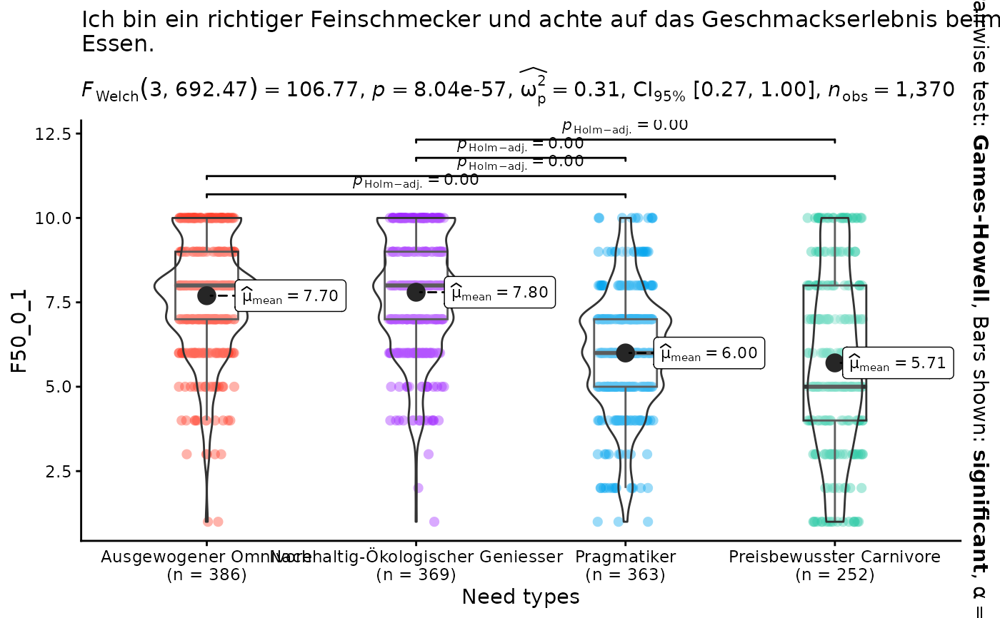
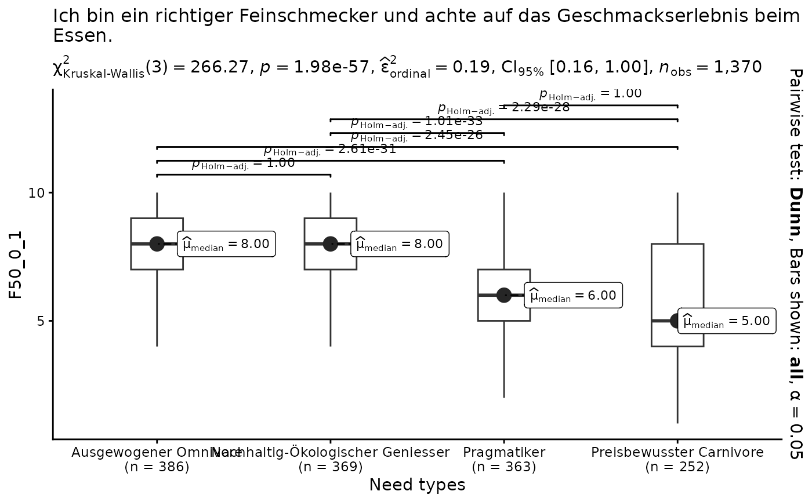
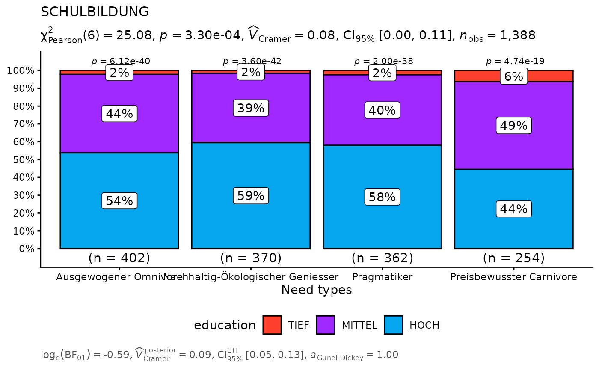

Exploratory data analysis: detailed plot of one variable by group
Source:R/eda_interactive.R
eda_plot_detail.RdPlots the distribution of a single variable by group with the results of
statistical tests, using ggstatsplot::ggbetweenstats() (numeric
variables: violin plot, boxplot and individual data points) or
ggstatsplot::ggbarstats() (categorical variables: stacked bar chart),
in the YouAnalyser style (YouGov colors, theme_classic()). This is the
plot of the "Detailed plot" tab of eda_explore().
Requires the ggstatsplot package.
Usage
eda_plot_detail(
data,
var,
group,
weight = NULL,
treat_as = c("auto", "numeric", "categorical"),
min_labels = 5,
type = c("parametric", "nonparametric", "robust", "bayes"),
violin = TRUE,
points = TRUE,
boxplot = TRUE,
centrality = TRUE,
pairwise_display = c("significant", "all", "none"),
p_adjust = "holm",
results_subtitle = TRUE,
bar_label = c("percentage", "counts", "both")
)Arguments
- data
A data frame, typically a haven-labelled tibble, or the output of
seg_cluster()(see "Grouping by a cluster solution").- var
Name of the variable to plot.
- group
Name of the grouping variable (e.g.
"cluster_k4").- weight
Optional. Name of a weight variable. Only noted in the caption, as ggstatsplot does not support weights.
- treat_as
"auto"(default),"numeric"or"categorical". See "Numeric or categorical?".- min_labels
Minimum number of value labels or distinct values for a variable to be treated as numeric (with
treat_as = "auto"). Defaults to 5.- type
Type of the tests:
"parametric"(default),"nonparametric","robust"or"bayes". See "Statistical tests".- violin, points, boxplot
Show the violin plot, the individual data points and the boxplot (numeric variables)? All default to
TRUE.- centrality
Show the mean (or median, if nonparametric) of each group with a label (numeric variables)? Defaults to
TRUE.- pairwise_display
Pairwise comparisons shown (numeric variables):
"significant"(default),"all"or"none".- p_adjust
Method to adjust the p-values of the pairwise comparisons (see
stats::p.adjust()). Defaults to"holm".- results_subtitle
Show the test results in the subtitle (and, for parametric tests, the Bayes factor in the caption)? Defaults to
TRUE.- bar_label
Labels of the bars (categorical variables):
"percentage"(default),"counts"or"both".
Details
Numeric and categorical variables are distinguished as in
eda_describe(). ggstatsplot does not support weights: the plot and all
tests are unweighted (a caption says so if weight is given).
Statistical tests
The tests are computed by ggstatsplot (via statsExpressions) and differ
from those of eda_test(). The results of the omnibus test are shown in
the subtitle, the pairwise comparisons as brackets above the groups
(numeric variables) and the method in the caption.
Numeric variables (ggstatsplot::ggbetweenstats())
type | Omnibus test (effect size) | Pairwise comparisons |
"parametric" | Welch's one-way ANOVA, not assuming equal variances (partial omega squared) | Games-Howell test |
"nonparametric" | Kruskal-Wallis rank sum test (rank epsilon squared) | Dunn's test |
"robust" | Heteroscedastic one-way ANOVA of 20% trimmed means (explanatory measure of effect size) | Yuen's test of trimmed means |
"bayes" | Bayesian one-way ANOVA: Bayes factor (posterior R squared) | Bayesian t-tests (Bayes factors) |
The p-values of the pairwise comparisons are adjusted with p_adjust
(default Holm). With two groups, the omnibus test is a (Welch's,
Mann-Whitney, Yuen's or Bayesian) two-sample test.
Categorical variables (ggstatsplot::ggbarstats())
Omnibus: Pearson's chi-square test of independence of the variable and the groups (Cramér's V; for
type = "bayes": Bayes factor of a Bayesian contingency table analysis).Above each bar: a chi-square goodness-of-fit test of whether the categories are equally frequent within this group (not a comparison between groups).
See also
Other eda:
eda_describe(),
eda_explore(),
eda_plot(),
eda_test()
Examples
# Numeric variable: violin plots, boxplots and Games-Howell tests
eda_plot_detail(sm_synthetic, var = "F50_0_1", group = "cluster_benchmark")

# Only boxplots, nonparametric tests, all pairwise comparisons
eda_plot_detail(
sm_synthetic,
var = "F50_0_1",
group = "cluster_benchmark",
type = "nonparametric",
violin = FALSE,
points = FALSE,
pairwise_display = "all"
)

# Categorical variable
eda_plot_detail(sm_synthetic, var = "education", group = "cluster_benchmark")
